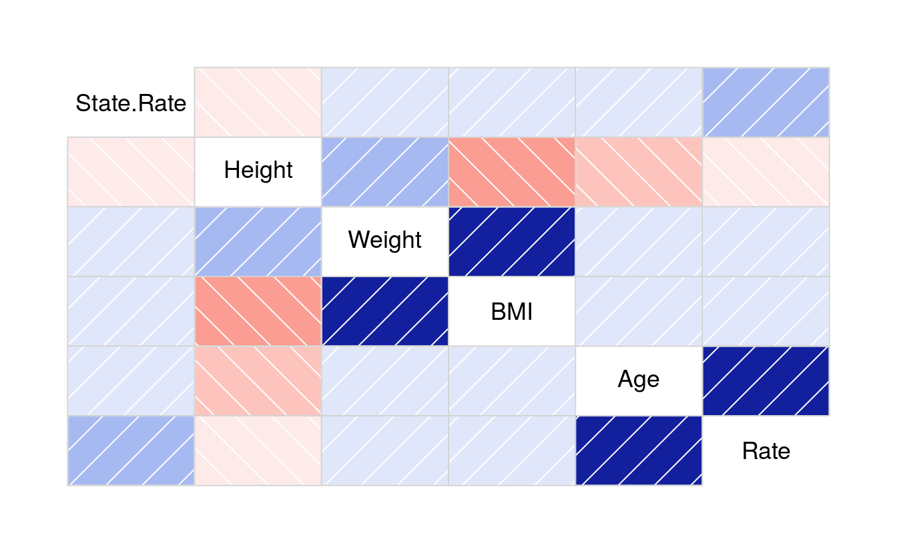
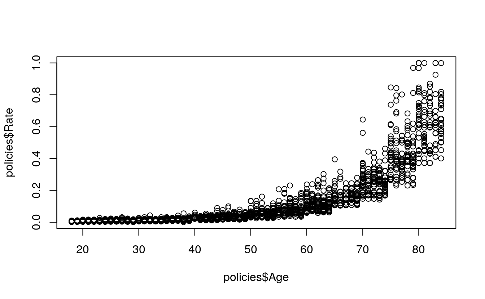
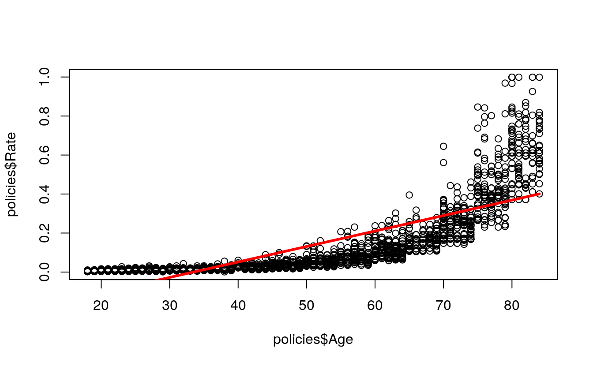
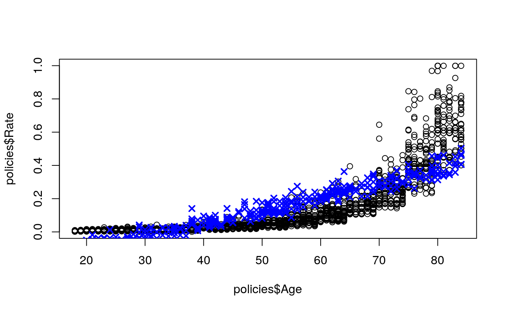
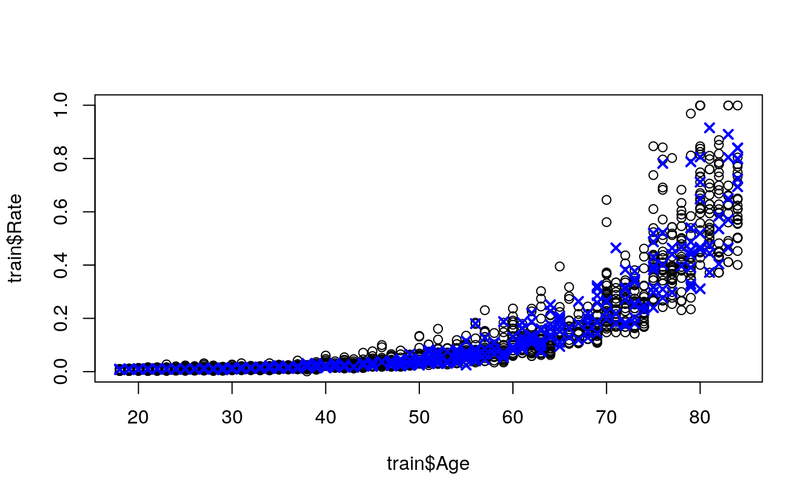
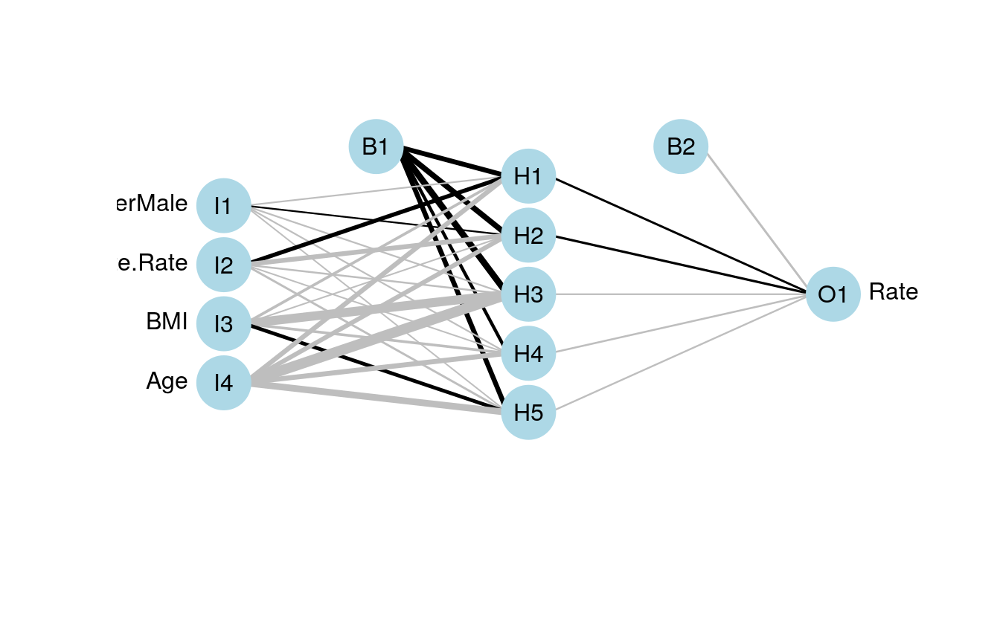

34 Comparing regression models
- Dataset:
Rates.csv - Algorithms: SLR, MLR, NN
34.1 Introduction
line 29 does not plot
Source: https://www.matthewrenze.com/workshops/practical-machine-learning-with-r/lab-3b-regression.html
library(readr)
policies <- read_csv(file.path(data_raw_dir, "Rates.csv"))
#> Parsed with column specification:
#> cols(
#> Gender = col_character(),
#> State = col_character(),
#> State.Rate = col_double(),
#> Height = col_double(),
#> Weight = col_double(),
#> BMI = col_double(),
#> Age = col_double(),
#> Rate = col_double()
#> )
policies
#> # A tibble: 1,942 x 8
#> Gender State State.Rate Height Weight BMI Age Rate
#> <chr> <chr> <dbl> <dbl> <dbl> <dbl> <dbl> <dbl>
#> 1 Male MA 0.100 184 67.8 20.0 77 0.332
#> 2 Male VA 0.142 163 89.4 33.6 82 0.869
#> 3 Male NY 0.0908 170 81.2 28.1 31 0.01
#> 4 Male TN 0.120 175 99.7 32.6 39 0.0215
#> 5 Male FL 0.110 184 72.1 21.3 68 0.150
#> 6 Male WA 0.163 166 98.4 35.7 64 0.211
#> # … with 1,936 more rows
summary(policies)
#> Gender State State.Rate Height
#> Length:1942 Length:1942 Min. :0.001 Min. :150
#> Class :character Class :character 1st Qu.:0.110 1st Qu.:162
#> Mode :character Mode :character Median :0.128 Median :170
#> Mean :0.138 Mean :170
#> 3rd Qu.:0.144 3rd Qu.:176
#> Max. :0.318 Max. :190
#> Weight BMI Age Rate
#> Min. : 44.1 Min. :16.0 Min. :18.0 Min. :0.001
#> 1st Qu.: 68.6 1st Qu.:23.7 1st Qu.:34.0 1st Qu.:0.015
#> Median : 81.3 Median :28.1 Median :51.0 Median :0.046
#> Mean : 81.2 Mean :28.3 Mean :50.8 Mean :0.138
#> 3rd Qu.: 93.8 3rd Qu.:32.5 3rd Qu.:68.0 3rd Qu.:0.173
#> Max. :116.5 Max. :46.8 Max. :84.0 Max. :0.999
library(RColorBrewer)
palette <- brewer.pal(9, "Reds")
# plot(
# x = policies,
# col = palette[cut(x = policies$Rate, breaks = 9)]
# )
library(corrgram)
#> Registered S3 method overwritten by 'seriation':
#> method from
#> reorder.hclust gclus
corrgram(policies)
cor(policies[3:8])
#> State.Rate Height Weight BMI Age Rate
#> State.Rate 1.00000 -0.0165 0.00923 0.0192 0.1123 0.2269
#> Height -0.01652 1.0000 0.23809 -0.3170 -0.1648 -0.1286
#> Weight 0.00923 0.2381 1.00000 0.8396 0.0117 0.0609
#> BMI 0.01924 -0.3170 0.83963 1.0000 0.1023 0.1405
#> Age 0.11235 -0.1648 0.01168 0.1023 1.0000 0.7801
#> Rate 0.22685 -0.1286 0.06094 0.1405 0.7801 1.0000
cor(
x = policies$Age,
y = policies$Rate)
#> [1] 0.78
plot(
x = policies$Age,
y = policies$Rate)
34.2 Split the Data into Test and Training Sets
set.seed(42)
library(caret)
#> Loading required package: lattice
#>
#> Attaching package: 'lattice'
#> The following object is masked from 'package:corrgram':
#>
#> panel.fill
#> Loading required package: ggplot2
indexes <- createDataPartition(
y = policies$Rate,
p = 0.80,
list = FALSE)
train <- policies[indexes, ]
#> Warning: The `i` argument of ``[`()` can't be a matrix as of tibble 3.0.0.
#> Convert to a vector.
#> This warning is displayed once every 8 hours.
#> Call `lifecycle::last_warnings()` to see where this warning was generated.
test <- policies[-indexes, ]34.3 Predict with Simple Linear Regression
simpleModel <- lm(
formula = Rate ~ Age,
data = train)
plot(
x = policies$Age,
y = policies$Rate)
lines(
x = train$Age,
y = simpleModel$fitted,
col = "red",
lwd = 3)
summary(simpleModel)
#>
#> Call:
#> lm(formula = Rate ~ Age, data = train)
#>
#> Residuals:
#> Min 1Q Median 3Q Max
#> -0.1799 -0.0881 -0.0208 0.0617 0.6300
#>
#> Coefficients:
#> Estimate Std. Error t value Pr(>|t|)
#> (Intercept) -0.265244 0.008780 -30.2 <2e-16 ***
#> Age 0.007928 0.000161 49.3 <2e-16 ***
#> ---
#> Signif. codes: 0 '***' 0.001 '**' 0.01 '*' 0.05 '.' 0.1 ' ' 1
#>
#> Residual standard error: 0.123 on 1553 degrees of freedom
#> Multiple R-squared: 0.61, Adjusted R-squared: 0.609
#> F-statistic: 2.43e+03 on 1 and 1553 DF, p-value: <2e-16
simplePredictions <- predict(
object = simpleModel,
newdata = test)
plot(
x = policies$Age,
y = policies$Rate)
points(
x = test$Age,
y = simplePredictions,
col = "blue",
pch = 4,
lwd = 2)
34.4 Predict with Multiple Linear Regression
multipleModel <- lm(
formula = Rate ~ Age + Gender + State.Rate + BMI,
data = train)
summary(multipleModel)
#>
#> Call:
#> lm(formula = Rate ~ Age + Gender + State.Rate + BMI, data = train)
#>
#> Residuals:
#> Min 1Q Median 3Q Max
#> -0.2255 -0.0865 -0.0292 0.0590 0.6053
#>
#> Coefficients:
#> Estimate Std. Error t value Pr(>|t|)
#> (Intercept) -0.428141 0.018742 -22.84 < 2e-16 ***
#> Age 0.007703 0.000156 49.28 < 2e-16 ***
#> GenderMale 0.030350 0.006001 5.06 4.8e-07 ***
#> State.Rate 0.613139 0.068330 8.97 < 2e-16 ***
#> BMI 0.002634 0.000518 5.09 4.1e-07 ***
#> ---
#> Signif. codes: 0 '***' 0.001 '**' 0.01 '*' 0.05 '.' 0.1 ' ' 1
#>
#> Residual standard error: 0.118 on 1550 degrees of freedom
#> Multiple R-squared: 0.64, Adjusted R-squared: 0.639
#> F-statistic: 688 on 4 and 1550 DF, p-value: <2e-16
multiplePredictions <- predict(
object = multipleModel,
newdata = test)
plot(
x = policies$Age,
y = policies$Rate)
points(
x = test$Age,
y = multiplePredictions,
col = "blue",
pch = 4,
lwd = 2)
34.5 Predict with Neural Network Regression
scaledPolicies <- data.frame(
Gender = policies$Gender,
State.Rate = normalize(policies$State.Rate),
BMI = normalize(policies$BMI),
Age = normalize(policies$Age),
Rate = normalize(policies$Rate))
scaledTrain <- scaledPolicies[indexes, ]
scaledTest <- scaledPolicies[-indexes, ]
library(nnet)
neuralRegressor <- nnet(
formula = Rate ~ .,
data = scaledTrain,
linout = TRUE,
size = 5,
decay = 0.0001,
maxit = 1000)
#> # weights: 31
#> initial value 548.090539
#> iter 10 value 10.610284
#> iter 20 value 3.927378
#> iter 30 value 3.735266
#> iter 40 value 3.513899
#> iter 50 value 3.073390
#> iter 60 value 2.547202
#> iter 70 value 2.296126
#> iter 80 value 2.166120
#> iter 90 value 2.106996
#> iter 100 value 2.092654
#> iter 110 value 2.058596
#> iter 120 value 2.039404
#> iter 130 value 2.023721
#> iter 140 value 2.018777
#> iter 150 value 2.006895
#> iter 160 value 1.999130
#> iter 170 value 1.993921
#> iter 180 value 1.990505
#> iter 190 value 1.989212
#> iter 200 value 1.988818
#> iter 210 value 1.988007
#> iter 220 value 1.987710
#> iter 230 value 1.987671
#> iter 240 value 1.987599
#> iter 250 value 1.987575
#> iter 260 value 1.987553
#> iter 270 value 1.987537
#> iter 280 value 1.987528
#> final value 1.987522
#> converged
scaledPredictions <- predict(
object = neuralRegressor,
newdata = scaledTest)
neuralPredictions <- denormalize(
x = scaledPredictions,
y = policies$Rate)
plot(
x = train$Age,
y = train$Rate)
points(
x = test$Age,
y = neuralPredictions,
col = "blue",
pch = 4,
lwd = 2)
